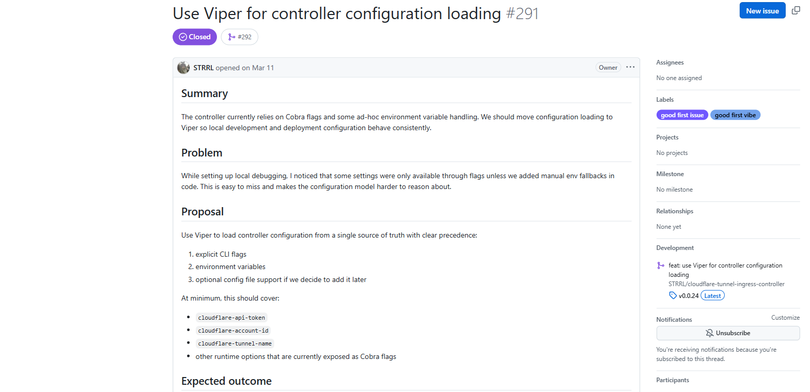

2026-07-31
첫 오픈소스 기여
참고
https://github.com/STRRL/cloudflare-tunnel-ingress-controller/issues/291
https://github.com/STRRL/cloudflare-tunnel-ingress-controller/pull/292
오픈소스 기여는 오래전부터 해보고 싶었던 일 중 하나였다. 하지만 막상 시작하려고 하면 어느 저장소에서 무엇부터 해야 할지 감이 잡히지 않아 계속 미루고 있었다.
그러다 오픈소스 기여에 다시 관심이 생겨서, 평소에 직접 쓰는 서비스와 관련된 저장소를 찾아보기로 했다.
실제로 쓰는 도구라면 코드를 읽을 때도, 이슈를 판단할 때도 훨씬 감이 잡힐 것 같았다.
그렇게 Spring, Cloudflare 등을 위주로 찾아보다가, 우연히 쿠버네티스에서 Cloudflare를 편리하게 연동할 수 있는 저장소인
STRRL/cloudflare-tunnel-ingress-controller를 발견했다.
쿠버네티스의 Ingress 리소스를 감지해 Cloudflare Tunnel로 자동 연결해주는 컨트롤러로,
서버에 인바운드 포트를 열지 않고도 클러스터 안의 서비스를 외부에 노출할 수 있게 해준다.
마침 이 저장소에 good first issue 라벨이 붙은 이슈가 올라와 있어서, 이번엔 미루지 않고 기여해보기로 했다.
이 글은 그 이슈를 발견한 순간부터 PR이 머지되기까지, 넉 달의 과정을 정리한 글이다.
이슈 #291 — 설정 통합

이슈의 내용은 이랬다. 컨트롤러 설정 대부분이 Cobra CLI 플래그로만 열려 있었고,
환경 변수가 필요한 일부 값만 코드 곳곳에서 os.Getenv로 따로 읽고 있었다.
메인테이너가 .env 파일로 로컬 디버깅을 하다가 이 구조의 불편함을 느끼고 직접 올린 이슈였다.
새 플래그를 추가할 때마다 환경 변수 지원을 수동으로 이어줘야 하고, 잊어버리기 쉽다는 것이다.
제안은 Viper를 도입해 설정 로딩을 한 경로로 모으고, CLI 플래그 > 환경 변수 순의 우선순위를 명확히 하자는 것이었다.
참여 의사 남기기 — 댓글과 작업
이슈가 올라오고 세 시간쯤 지나 이 이슈를 발견했다. 바로 댓글을 남기고 코드베이스를 파악해 구현을 시작했다.
구현은 Claude와 함께 진행했다. 변경이 필요한 범위를 함께 짚어보고, 작성한 코드에 대한 1차 리뷰도 맡겼다. 덕분에 큰 부담 없이 PR을 열 수 있었다.
몇 시간 뒤 메인테이너가 흔쾌히 승낙해줬다.
구현 — 플래그와 환경 변수를 한 경로로
변경의 핵심은 세 가지였다.
- Cobra의
PersistentFlags전부를BindPFlags로 viper에 바인딩 AutomaticEnv를 켜고, 플래그 이름의 하이픈을 언더스코어로 치환하는 리플레이서 등록RunE안에서 모든 설정 값을 viper로 읽어, 우선순위 결정을 한 곳으로 모으기
viper.AutomaticEnv()
viper.SetEnvKeyReplacer(strings.NewReplacer("-", "_"))
if err := viper.BindPFlags(rootCommand.PersistentFlags()); err != nil {
log.Fatalf("failed to bind flags to viper: %v", err)
}위 설정으로 아래 두 방식이 완전히 동일하게 동작한다.
--cloudflare-api-token=xxx
CLOUDFLARE_API_TOKEN=xxx
기존에 controlled-cloudflared-connector.go에서 직접 호출하던
os.Getenv도 모두 viper로 교체해서
설정을 읽는 경로를 하나로 만들었다.
이렇게 하면 로컬에서 .env 파일만으로 디버깅이 가능해지고,
새 플래그를 추가할 때 환경 변수 지원을 따로 이어줄 필요가 없어진다.
첫 리뷰 — Gemini
PR을 열고 6분 뒤에 첫 리뷰가 달렸다. 사람이 아니라 Gemini Code Assist였다. 그것도 high 배지가 붙은 지적이었다.
요지는 이랬다. cobra가 초기화될 때 options 구조체에 디폴트 값을 세팅해두는데
(예: ingress class의 "cloudflare-tunnel"),
RunE에서 viper.Get 계열로 덮어쓰면
플래그도 환경 변수도 주어지지 않은 키는 빈 문자열이나 0이 되어 디폴트 값이 유실되는 버그라는 것이다.
viper.SetDefault를 쓰라는 제안까지 함께였다.
솔직히 처음 읽었을 때는 뜨끔했다.
viper.GetString()이 값이 없으면 빈 문자열을 반환하는 것은
사실이기 때문에, 충분히 그럴듯하게 들렸다.
디폴트 값 유실 여부
지적을 그대로 수용하기 전에, Viper v1.20.1 소스의 find() 함수를 직접 열어봤다.
확인해보니 pflag를 조회하는 지점이 한 곳이 아니라 두 곳이었다.
- 플래그가 명시적으로 전달된 경우(
HasChanged() == true)에만 값을 읽는 지점 - 값을 어디에서도 찾지 못했을 때,
Changed여부와 무관하게 pflag의 디폴트 값을 읽는 "last chance" 지점
소스 주석에도 이 의도가 그대로 적혀 있다.
// last chance: if no value is found and a flag does exist for the key,
// get the flag's default value even if the flag's value has not been set.
GetString()은 내부적으로 이 fallback이 켜진 경로로 조회하기 때문에,
SetDefault를 따로 호출하지 않아도
cobra 플래그에 걸어둔 디폴트는 그대로 보존된다는 것을 알 수 있었다.
네 가지 케이스 검증
소스만 읽고 반박하기에는 부담스러워서, PR과 동일한 버전(cobra v1.10.2 + viper v1.20.1)으로 로컬에서 네 가지 케이스를 모두 확인했다.
| 입력 | 결과 |
|---|---|
| 플래그 X, 환경 변수 X | "cloudflare-tunnel" — 디폴트 보존 |
| 환경 변수만 | "from-env" — 환경 변수 반영 |
| 플래그만 | "from-flag" — 플래그 반영 |
| 둘 다 | "from-flag" — 플래그 우선 |
이 근거를 정리해 리뷰 스레드에 반박 코멘트를 남겼다. 혹시 내가 놓친 부분이 있다면 알려달라는 말도 덧붙였다.
얼마 뒤 메인테이너가 스레드에 답을 남겼다. Gemini의 지적은 오탐이고 너무 성가시다며, 반박을 그대로 받아들였다. 그러고는 저장소에서 Gemini 리뷰를 아예 꺼버렸다.
high 배지가 붙었다고 해서 맞는 지적이 아니라는 것을 알 수 있었다.
만약 그대로 SetDefault를 추가했다면,
cobra와 viper 양쪽에 디폴트를 중복 관리하는 코드가 남을 뻔했다.
두 번째 리뷰 — Codex, 반영
Gemini를 꺼버린 메인테이너는 대신 Codex에게 리뷰를 요청했다.
Codex의 지적은 결이 달랐다. go.mod에는 viper를 추가했는데
go.sum에 대응하는 체크섬 항목이 없어서,
-mod=readonly 환경에서는 빌드가 깨진다는 것이다.
확인해보니 명백한 내 실수였다. go.sum 변경분을
커밋에 포함하는 것을 빠뜨렸다. 바로 반영하고 답을 남겼다.
같은 AI 리뷰였지만 하나는 반박했고 하나는 수용했다. 판단 기준은 리뷰어가 사람이냐 AI냐가 아니라, 지적이 실제 코드와 맞느냐였다.
병합 — 기다리던 병합
리뷰 대응이 끝나고 열흘쯤 지나도 소식이 없어서, 더 처리할 것이 있는지 정중하게 물었다. 메인테이너는 오늘 안에 확인해보겠다고 답했지만, 이후로 별다른 소식 없이 넉 달이 흘렀다. 오픈소스 메인테이너는 본업이 따로 있는 경우가 대부분이고, 저장소의 PR 목록을 보면 기다리는 사람이 나만 있는 것도 아니었기에, 재촉하지 않고 기다리기로 했다.
7월 20일, 드디어 병합됐다. 넉 달 사이 master의 배포 관련 코드가 리팩터링되어 내 브랜치와 충돌이 있었는데, 메인테이너가 직접 충돌을 해결하면서 내 viper 설정을 새 구조에 맞게 이식해줬다. fork에서 온 PR은 e2e 워크플로가 저장소 secrets에 접근할 수 없어서, 유닛/통합 테스트가 통과한 것을 확인한 뒤 admin 권한으로 병합했다고 한다. 메인테이너는 기여에 감사하다는 말도 함께 남겼다.
결론
결국 이번 기여에서 내가 작성한 코드는 수십 줄이었지만, 배운 것은 대부분 코드 밖에 있었다.
- 기여는 코드를 짜는 일보다 근거를 갖고 대화하는 일에 가까웠다. 반박이든 수용이든, 소스와 검증 결과를 근거로 말하면 대화가 된다.
- AI 리뷰어가 기본이 된 시대에는 지적을 검증하는 능력이 더 중요해진 것 같다. high 배지에 눌려 그대로 수정했다면 필요 없는 코드만 늘어날 뻔했다.
- 머지까지의 시간도 기여의 일부였다. 기다림을 재촉으로 채우지 않은 것은 잘한 선택이었다고 생각한다.
이번에는 메인테이너가 만들어둔 good first issue에 참여한 것이었지만, 다음에는 직접 사용하면서 느낀 불편을 이슈로 제안하는 것부터 시작해볼 계획이다.